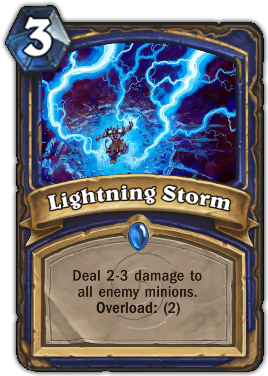
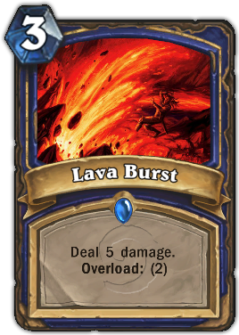
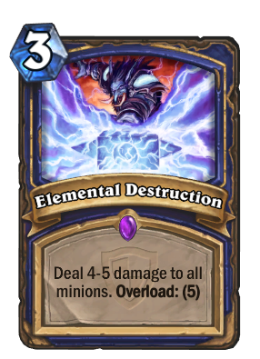

The Shaman class is represented by Thrall. As masters of the elements, they can call upon nature to strike their foes with lightning, fire, water and earth. Shamans can overload themselves to unleash huge combinations of spells and minions in a single turn, but must spend a turn to recover afterwards.Shamans are a very board control orientated class with a lot of cheap removal. They have a unique game mechanic called Overload, allowing you to play a card at a discount while paying the remainder the turn after.
|  |  |  |